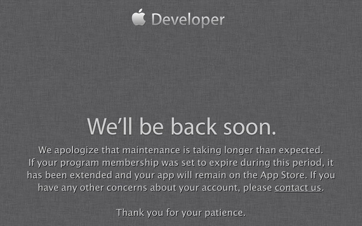

CSDN"密码泄露门"
国内最大的开发者社区CSDN.NET承认安全系统遭到黑客攻击，CSDN数据库中的部分用户的登录名及密码遭到泄露。
查看详情»

苹果开发者网站被黑
因为疯狂下载iOS 7 Beta导致崩溃的苹果开发者网站又传来坏消息，网站在上周四被黑客攻破，开发者信息可能遭到泄露。
查看详情»
苹果iMessage受DDos攻击
攻击者使用了一个简单的AppleScript脚本，运行后可以快速发出大量的消息，要么导致iMessage应用崩溃，要么被淹没在无休止的告警通知中。
查看详情»